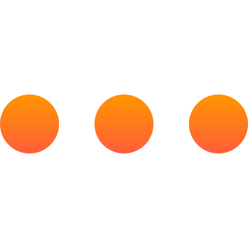

НАВИЧКИ:

Маю досвід зі створення веб-додатків, сайтів, використовуючи додаткові
бібліотеки (Bootstrap, google fonts). Створюю нові проекти за
допомогою npm з підлюченням додаткових бібліотек чи модулів. Більше
0.5 років вивчаю React. Працюю з хуками (useState, useEffect),
React-Router, подіями, промісами, API з використанням axios. Посилання
на мої проекти
https://github.com/makc94/
ОСВІТА:

2011-2016 роках закінчив: Інститут спеціального зв'язку та захисту
інформації Національного технічного університету України "КПІ".
Спеціальність: "Інформаційні управляючі системи та технології".
Кваліфікація: "Інженер із застосуванням комп'ютерів."
РОБОТА:

2016 - 2021 роки. Державна служба спеціального зв'язку та захисту
інформації України у Львівській області. На посаді спеціаліста
спеціального зв'язку.
КУРСИ:

"JavaScript core" у SoftServe it академії.
Курси англійської у Green Forest - рівень intermediate.
Курси англійської у Green Forest - рівень intermediate.
ІНШЕ:

Розмовляю вільно ураїнською та російською мовами. Цікавлюся шахами
(маю 1 розряд), плаванням, лижним спортом та комп'ютерними іграми.